이윤지의 삶
2000년 8월 16일 캐나다에서 태어난 저는 엄마, 아빠, 그리고 세 살 터울의 오빠와 함께 성장했습니다. 어린 시절 오빠와 같은 초등학교에 다니며 많은 추억을 쌓았으며, 함께한 시간들은 저에게 큰 힘이 되었습니다. 현재 저는 대학에서 학업에 열심히 전념하고 있으며, 내년에 졸업을 앞두고 있습니다.

졸업은 저의 가장 자랑스러운 성취 중 하나가 될 것입니다. 이후에는 영양사로서 사람들의 건강을 돕는 일을 하고 싶습니다. 일상에서는 마라탕을 즐기며, 저녁 시간에는 릴스를 보며 하루를 마무리합니다.
이번 [The Life Gallery : 이윤지 전]을 통해 그녀의 모든 순간을 축하하고,
그녀와 함께한 추억을 바로 이 곳에 나눕니다.
앞으로도 삶을 응원하고 함께해 주기를 바랍니다.